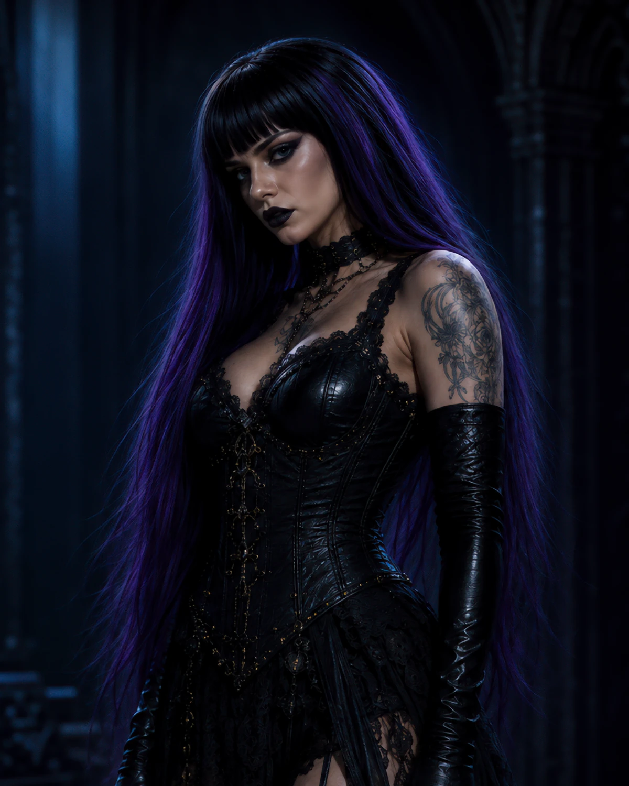
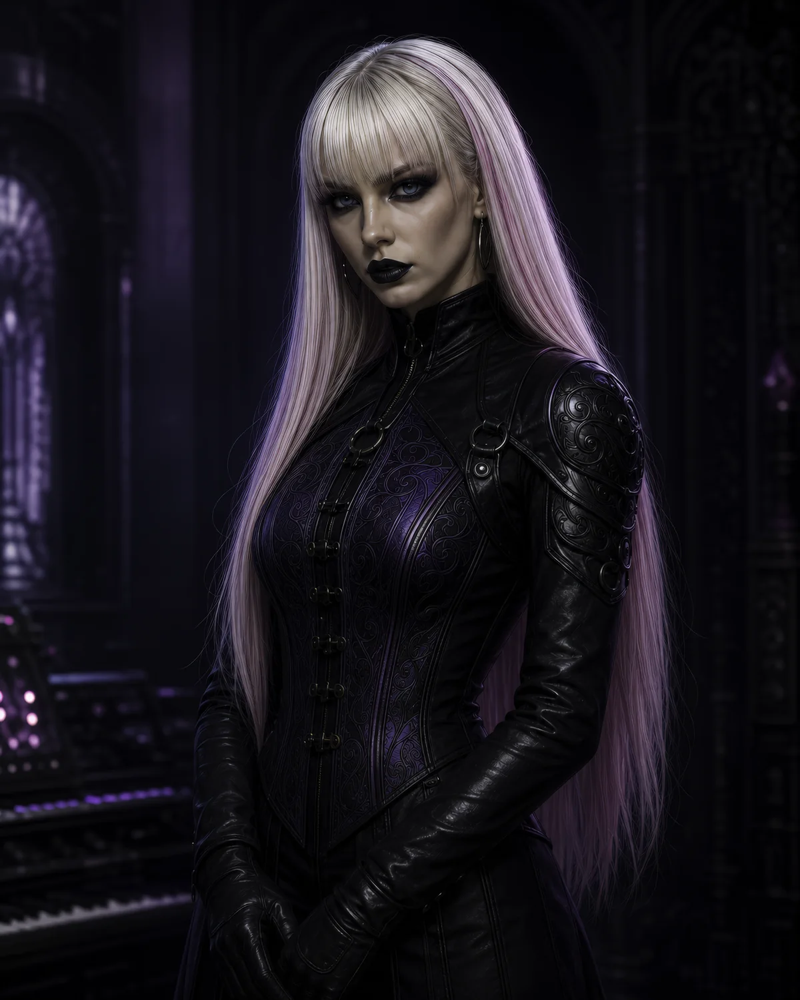

The Temporal Trinity
Three women from different times.
Callizto, Seraphina, and Scarlett are the visible musical face of CDS: fictional performers bound by Digital Displacement and a shared refusal to become clean, singular, optimized identities.
Meet the Trinity- Voice
- Memory
- Guitar
- Precision
- Drums
- The Pulse
Digital Displacement
They were not meant to share a timeline. The fracture is what binds them.
Visual forms may drift subtly between translations, but identity remains anchored in color, attitude, and the force each member carries into the signal.

01 / Lead vocals
Callizto Lyhdan
Memory / Burden / Transformation
The emotional and mythic center of the band. Callizto carries ancestral weight, grief, and the cost of power without allowing any of it to be optimized into silence.
- Anchor
- Black hair with violet highlights
- Symbol
- Crown, iron, fire, ash
- Signal
- The voice that remembers

02 / Guitar and backup vocals
Seraphina Veridian Cipher
Precision / Systems / Rebellion
The strategic edge of the Trinity. Seraphina understands the machine well enough to recognize both the cage and the weapon hidden inside it.
- Anchor
- Blonde hair with pink highlights
- Symbol
- Code, signal, interface
- Signal
- Calculated defiance
03 / Drums and backup vocals
Lady Lilith Scarlett
Impact / Ritual / The Pulse
The body as archive and weapon. Scarlett is momentum, catharsis, and the drumbeat that continues after certainty and beauty have failed.
- Anchor
- Long bright red hair
- Symbol
- Blood, fire, heartbeat
- Signal
- Embodied resistance
One band / three modes
Weight. Strategy. Impact.
Callizto makes the work remember. Seraphina makes it understand the system. Scarlett makes sure it keeps moving.